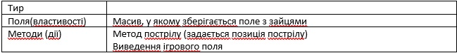
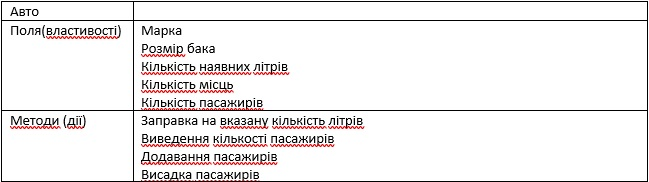

ДЗ №15
Обов'язкові завдання
Дано два об’єкта. Обидва містять масив цілих чисел. При цьому у одному з них є функція знаходження суми, а у
іншому – функція для знаходження добутку тих, які знаходяться між заданими мінімальним і максимальних значенням.
Використати обидва методи стосовно обидвох об’єктів (використати call, apply)
Створити об’єкт «Тир». У масиві зберігаються 1, якщо у цьому квадраті є заєць і 0 в іншому випадку.

Створити об’єкт «Авто».

Розробити клас MultChecker для перевірки таблиці множення

Розробити клас Baner

Розробити клас «Керівник танців»